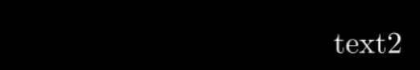

animation显示操作¶
声明
早期Elteoremadebeethoven有个仓库和配套的youtude教学视频， Animation course with Manim ，小破站有搬运 BV1W4411Z7Zt ， 然后cai-hust学习并且做了相关的教程MarkDown笔记 cai-hust_manim-tutorial-CN ， 这部分不是我写的，我只是想把Markdown、pdf等资料整合编辑成方便的文档格式，以方便查阅使用Manim，cai-hust已授权，表示标明链接仓库就行。
显示操作¶
1 基本步骤（以TextMobject为例）¶
from manimlib.imports import *
class WriteText(Scene):
def construct(self):
text = TextMobject("A Text")
text.to_edge(UP)
text.move_to(1*UP+0.1*RIGHT)
//以play为例
self.play(SomeWriteMethod(text),run_time = seconds)
self.wait(seconds)
self.remove(text)
5 位置相关的函数¶
5.1toedge()和tocorner()¶
someObject.to_edge(DIRECTION的线性组合,buff = number)
someObject.to_corner(DIRECTION的四个组合方向,buff = number)
to_edge参数可以是任意方向(方向有哪些见附录中方向常数列表)以及它们的线性组合，如**0.1*RIGHT+0.2*UP**，buff 两者的边缘的距离
to_corner仅接受组合方向UR，UL，DR，DL

如果没有toedge和tocenter默认为中间（ORIGIN）
someObject.to_edge(UP+RIGHT)完全等效于someObject.to_corner(UR),其余四个方向同理
5.2 move_to()¶
someObject.move_to(DIRECTION的线性组合 or numpy的向量)
在当前位置移动到对应的位置
参数可以是UP，DOWN，LEFT，RIGHT等的倍数，可以非整数，单位宽度大概是4倍默认字体的行高，下面只要跟这八个个固定值有关的均是如此
someObject.move_to(UP+2*RIGHT)
参数也可以是numpy向量：
vec = np.array([1,2,0])
someObject.move_to(vec)
因为图案的位置向量可以由get_center得到，所以可以如下操作：
someObject.move_to(someObjectget_center()+2*RIGHT)
参数还可以是另外一个图案，表示的位置是该图案的几何中心：
someObject.move_to(someObject2)
5.3 next_to()¶
someObject1.next_to(someObject2,DIRECTION,buff=number)
someObject1对于someObject2的相对位置
与moveto的区别在于，nextto表示的是边界的距离，而不是中心距离

如：text1.next_to(text2,LEFT,buff=2) ：

5.5 rotate()¶
someObject.rotate(PI*number或者number，point)：
逆时针旋转
如果相对图案为空，则自旋
如：
class RotateObject(Scene):
def construct(self):
textM = TextMobject("Text")
textC = TextMobject("Reference text")
textM.shift(UP)
textM.rotate(PI/4)
self.play(Write(textM),Write(textC))
self.wait(2)
否则相对 相对图案旋转：
class RotateObject(Scene):
def construct(self):
textM = TextMobject("Text")
textC = TextMobject("Reference text")
textM.rotate(PI/4,textC)
self.play(Write(textM),Write(textC))
self.wait(2)
6 播放动画¶
6.1 play()¶
动画效果，可以是多个text，这个函数是多线程的，所以不会阻塞就会进入下一行操作
（如果下一个操作是remove掉text而没有使用wait函数进行等待，最终效果会变成立即销毁text即没有显示text，下面的add也同理）
play(SomePlayMethod(someObject),run_time = seconds)：播放某种动画方法
如果希望并行同时播放多个动画，仅仅是python语法问题，给出如下例子模板：
class concurrent(Scene): def construct(self): dot1 = Dot() dot2 = Dot() dotshift(UP) dot3 = Dot() dot3.shift(DOWN) # 单个动画的演示 self.play(Write(dot1)) # 多个动画演示 self.play(*[ Transform(i.copy(),j) for i,j in zip([dot1,dot1],[dot2,dot3]) ])# 故意使用i,j是为了显示zip的使用 self.wait()
play(someObjectX.functionX,functionParamX,
someObjectX.functionX,functionParamX,
……
run_time=seconds):同时改变某种或多种属性
class ChangeColorAndSizeAnimation(Scene): def construct(self): text = TextMobject("Text") text.scale(2) text.shift(LEFT*2) self.play(Write(text)) self.wait() self.play( text.shift, RIGHT*2, text.scale, 2, text.set_color, RED, run_time=2, ) self.wait()
6.1.1 显示动画函数SomePlayMethods¶
动画函数，主要包含下列几个：
\manimlibanimationfading.py：渐变效果
FadeXXX(someObject)
包含FadeIn，FadeInFromDown，FadeOutAndShiftDown，FadeInFromPoint，FadeInFromLarge等等
解释：fade in/out 渐入/出；shift down 垂直下降
\manimlibanimationcreation.py：书写效果
ShowCreation(someObject)
无法清楚表达，具体可以自行尝试看效果
UnCreate(someObject)
倒放ShowCreation动画效果
DrawBorderThenFill(someObject)
画出边界然后填充
Write(someObject)
继承自DrawBorderThenFill，增加从左往右逐渐显示的效果
\manimlibanimationtransform.py从一个渐变成另一个
Transform(someObject1,someObject2)
ReplacementTransform(someObject1,someObject2)
两者的异同：
共同点：显示特效相同
不同点： Transform显示在画布上的object永远是someObject1
伪代码：
Transform(someObject1,someObject2): show someObject1 on screen show the transform course of someObject1 to someObject2 someObject1 = someObject2 show updated someObject1 on screen
ReplacementTransform显示在画布上的从someObject1变成了someObject2
伪代码：
ReplacementTransform(someObject1,someObject2): show someObject1 on screen show the transform course of someObject1 to someObject2 someObject1 = someObject2 show someObject2 on screen # 不同点在此 remove someObject1 from screen # 不是从内存删除，仅仅不可见
用两段代码来看看效果：
class TextArray(Scene): def construct(self): text = TextMobject("tex1","text2","text3") text[0].shift(2*LEFT) text[0].set_color(RED) text[1].shift(LEFT) text[1].set_color(BLUE) self.play(Write(text[0])) self.wait(2) # 显示的还是text[0]只是text[0]值变成了text[1] self.play(Transform(text[0],text[1])) # 此时没有让text[0]消失，但让text[1]显现并转换为text[2] # 最终text[0]的值为初始text[1]的值，text[1]的值为初始text[2]的值 self.play(Transform(text[1],text[2])) # 最终屏幕上显示的是text[0]和text[1] self.wait(3)


将上面的替换成ReplacementTransform：
class TextArray(Scene): def construct(self): text = TextMobject("tex1","text2","text3") text[0].shift(2*LEFT) text[0].set_color(RED) text[1].shift(LEFT) text[1].set_color(BLUE) self.play(Write(text[0])) self.wait(2) # 显示的是text[1]但是text[0]值也变成了text[1]，text[0]消失 self.play(ReplacementTransform(text[0],text[1])) # 显示text[2],text[1]值也变成了text[2]，text[1]消失 # 最终text[0]的值为初始text[1]的值，text[1]的值为初始text[2]的值 self.play(ReplacementTransform(text[1],text[2])) # 最终显示的是text[2] self.wait(3)
最后一幅图不一样：
如果希望不要改变someObject1的值可以使用：someObject1.copy()进行深度拷贝
someObject1.copy()执行的伪代码：
someObject1.copy(): new object object.allValue = self.allValue return object
MoveToTarget(someObject):
仅对自身产生变化
比较简单，用示例代码即可以看懂：
class ChangeColorAndSizeAnimation(Scene): def construct(self): text = TextMobject("Text") self.play(Write(text)) text.generate_target() text.target = TextMobject("Target") text.target.set_color(RED) text.target.scale(2) text.target.shift(LEFT) self.play(MoveToTarget(text),run_time = 2) self.wait()
\manimlibanimationgrowing.py
GrowFromXXX(someObject)
GrowFromCenter,GrowFromPoint,GrowFromEdge,GrowArrow等等
manimlibanimationupdate.py
UpdateFromFunc(obj,update_function)
同步播放,很好理解，见例子：
更多同步并发的播放见9
class Updater(Scene): def construct(self): dot = Dot() text = TextMobject("Label")\ .next_to(dot,RIGHT,buff=SMALL_BUFF) self.add(dot,text) def update_text(obj): obj.next_to(dot,RIGHT,buff=SMALL_BUFF) # Only works in play self.play( dot.shift,UP*2, UpdateFromFunc(text,update_text) ) self.wait()
6.1.2 run_time¶
动画从开始到结束所用的时间，决定了动画的快慢（动画write的快慢是固定的不由runtime决定，但是到达了runtime又没有后面的wait，write会被截断），而非动画播放完了继续等待到run_time指定的时间，注意如果runtime太短可能导致动画write
6.1.3 rate_func¶
直译为速度函数，即内定的动画函数
分为三个值：thereandback来回，linear一去不复返，smooth平滑（速度先为0，然后加快，到了中间减速最后到达终点为0）
例：
self.play(
triangle.shift,RIGHT*2,
rate_func=smooth, # Change this with: linear,smooth
run_time=5
)
6.4 remove()¶
remove(someObject1,someObject2,…)：
移除text，可以是多个text，注意FadeOut类的动画虽然自带消失效果但是该变量还是会停留在内存中
7 设置颜色¶
someObject.set_color(COLOR)
COLOR有哪些见附录的颜色一栏，COLOR本质上是一个字符串所以可以自定义字符串传入：
someObject.set_color(string)
如：
someObject.set_color("#0000FF")
8 缩放大小¶
someObject.scale(number)
class TextArray(Scene):
def construct(self):
dot1 = Dot()
dot1.scale(3)
dot1.shift(UP)
dot2 = Dot()
self.add(dot1,dot2)
self.wait(3)
9 同步播放动画¶
TODO：暂时没有时间理解源码
让某一个物体（mobject）跟随另一个物体的移动而并行移动（使用其他移动方式，路径）
manimlibmobjectmobject.py
addupdater(updatefunction, index=None, call_updater=True)
update_function：更新函数，函数传入一个object对象，函数内部有一系列对该对象和已知的对象进行的一系列操作，可以是lambda表达式
例子：让一个点在“label”文字右边，随着文字的移动，始终保持在其右侧
# author:TB
class AddUpdater1(Scene):
def construct(self):
dot = Dot()
text = TextMobject("Label")\
.next_to(dot,RIGHT,buff=SMALL_BUFF)
self.add(dot,text)
# Update function 更新函数
def update_text(obj):
obj.next_to(dot,RIGHT,buff=SMALL_BUFF)
# Add update function to the objects
# 把更新函数加给对象
text.add_updater(update_text)
# 如果想简洁，lambda表达式如下：
# text.add_updater(lambda m: m.next_to(dot,RIGHT,buff=SMALL_BUFF))
# 此时下面的remove_updater(update_text)不能继续使用，需要改为clear_updaters
# Add the object again 重新加入text
# 注意这个步骤不能少，否则看不到！！！
# 即使之前加入过，现在还是要重新加入
self.add(text)
self.play(dot.shift,UP*2)
# Remove update function
text.remove_updater(update_text)
self.wait()
removeupdater(updatefunction)取消并行播放函数
clear_updaters(recursive=True)取消所有的并行播放函数
UpdateFromFunc(Animation)
见6.1.1,注意这个函数仅在play函数中生效，play结束后就不会继续同步
更多例子（有时间再补充）：TB的更新函数页面
补充一个类似的案例：from manim-tutorial 。
1 2 3 4 5 6 7 8 9 10 11 12 13 14 15 16 17 18 19 20 21 22 23 24 25 26 27 28 29 30 31 | from manimlib.imports import *
from math import cos, sin, pi
class Shapes(Scene):
def construct(self):
#######Code#######
#Making Shapes
circle = Circle(color=YELLOW)
square = Square(color=DARK_BLUE)
square.surround(circle)
rectangle = Rectangle(height=2, width=3, color=RED)
ring=Annulus(inner_radius=.2, outer_radius=1, color=BLUE)
ring2 = Annulus(inner_radius=0.6, outer_radius=1, color=BLUE)
ring3=Annulus(inner_radius=.2, outer_radius=1, color=BLUE)
ellipse=Ellipse(width=5, height=3, color=DARK_BLUE)
pointers = []
for i in range(8):
pointers.append(Line(ORIGIN, np.array([cos(pi/180*360/8*i),sin(pi/180*360/8*i), 0]),color=YELLOW))
#Showing animation
self.add(circle)
self.play(FadeIn(square))
self.play(Transform(square, rectangle))
self.play(FadeOut(circle), FadeIn(ring))
self.play(Transform(ring,ring2))
self.play(Transform(ring2, ring))
self.play(FadeOut(square), GrowFromCenter(ellipse), Transform(ring2, ring3))
self.add(*pointers)
self.wait(2)
|